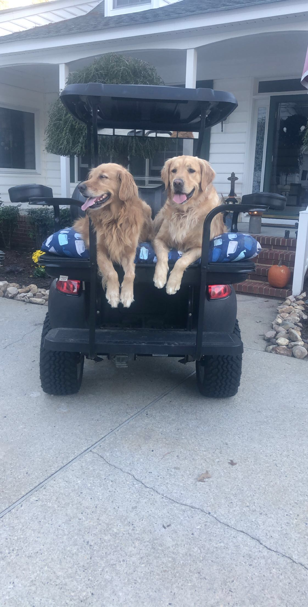

I was in the chair at my hairdresser’s when she took a call from her sister, who works the front desk at my hairdresser’s own doctor’s office. My hairdresser asked her something I was not expecting. She wanted to know whether an appointment that had just shown up on her patient scheduler was real or fake.
Real or fake. My ears perked up.
At the risk of outing my lifelong habit of eavesdropping, I asked what the difference was. Her sister, the receptionist, books fake appointments for her at the end of the day. She calls them phantoms. A phantom fills a slot on the schedule, so the front desk cannot book a real patient into it. Block out the last hour with phantoms, the ones booked under my hairdresser’s name, and nothing real can land there, and the team gets to leave on time. I genuinely did not know whether to be appalled or impressed.
Here is the part that stuck with me. The phantoms were not a secret. The physician she worked for knew. She saw the ghosts on the schedule and let them stand, because she was underwater too, and the group that owned the practice was not listening to either of them. So the receptionist guarded the door, the doctor let her, and the people who could have fixed the actual schedule were too far up the chain to notice.
Back in the day we called this gatekeeping. Merriam-Webster defines a gatekeeper as someone or something that controls access, and that is exactly what is happening. What that receptionist is doing, what a lot of our teams are doing, is controlling who gets through the door, and when. The phantom appointment is just the most honest version of it.
Don’t delete the ghosts
When you find this in your own hospital, and you will, the instinct is to crack down. Pull up the schedule, find the blocked slots, and announce that the practice does not do phantom appointments. I know the instinct because I had it. When I first owned a hospital I treated guarded doors like a case to crack. I went looking for them, determined to get to the bottom of each one.
Investigating was the right instinct. My execution was not always kind. More than once I went in like a detective when the person in front of me needed a colleague, and “help me understand what happened here” came out sounding a lot more like “explain yourself.”
The phantom appointment is the symptom. Block a slot, send a case out, refer a spay across town. Delete the ghosts without knowing why they are there and they come back, because you treated the schedule instead of the thing that made someone cheat it. So before you touch anyone’s calendar, work the differential. The same blocked slot can come from six very different places.
- No catch-up time. There is no room to finish cases, fill prescriptions, or write medical notes, so the team turns work away to take back time the schedule never accounted for.
- No authority. The team sees the day getting away from them but has never been given the power to stop scheduling, so ghosts appear instead.
- People and pet pleasers. A team that cannot say no fills the day past what it can carry, then guards the back end to survive it.
- A skills gap. A doctor or team was never trained for certain procedures, or has lost confidence in them, and the schedule routes around them.
- Revenue pressure. The owner keeps the book open because labor hours, inventory, and new equipment only happen if the revenue affords them.
- Front versus back. The resentment between front and back gets bad enough that the front desk stops booking legitimate appointments to avoid the grief, even when the schedule was fine.
The first five are reasons a door gets guarded. The sixth is a door that should never have been blamed. And before you reach for any of them, rule out the lazy answer. Once in a while you do find someone who has genuinely checked out, who blocks the schedule because they would rather not do the work in front of them. It happens, but it is rarer than a frustrated owner wants to believe, and reaching for it first is the trap. Even that person almost always cared once.
What worked in my hospitals will not map cleanly onto yours, but the principle under each fix will travel.
1. Build catch-up time into the schedule
The most common reason is the simplest. There is no time built into the day to do the work the day creates.
When I was a new graduate I worked at a hospital that took walk-ins. We closed at six, but if someone came through the door before six, even at 5:58, we saw them. Quick vaccine or full workup, it did not matter. I can count on one hand how many times I left at six. Honestly, one finger of that hand.
One evening a very lethargic Golden Retriever came into the lobby. His mom said he had been vomiting all day, starting at five that morning with the sound only moms seem able to hear, the heaving that crescendos into something liquid hitting the floor. First the kibble, then the water, by evening just bile. I watched the eye rolls go around the team, the kind that say she waited all day and now it is our problem. When we asked whether he might have eaten something he should not have, mom assured us absolutely not. More eye rolls, because as we all know, Goldens never eat anything they should not. He must have been an off-brand Golden.
He looked genuinely pitiful. We ran diagnostics, started treatment, stayed an extra ninety minutes, and sent him to the emergency hospital for surgery. The foreign body was, you guessed it, a sock.
I felt wonderful about that dog. I felt equally awful for my team. Someone missed a kid’s game. Someone missed a dinner they had planned for a week. We did right by the patient on their own time, because a policy written by someone else said we had to. That is where the urge to guard the door is born. It is not a lack of caring for pets. It is a hundred nights like that one, where a team gives of their personal life and the people doing the work pay for a rule they had no hand in writing.
The fix for a day with no slack is slack, and you have to build it in on purpose, because it will never show up on its own. In my hospital that meant doctors were trained to write their SOAP notes through the day, as they saw patients, not from memory days later. The time to write each note was built into the appointment itself, so the record was finished while the visit was still fresh. The surgery team had protected time of their own to finish records, prepare go-home medications, and clean and restock the surgical suite. Yours will look different. The principle holds. If there is no room to catch up, a team will make room by turning work away, and a phantom is them taking back the time the schedule never gave them.

2. Give your team authority to close the book
They know by two o’clock that the evening is going to fall apart. They can feel it, because it is a Friday afternoon and they have already squeezed in two vomiting dogs, a limping cat, and Mrs. Jones’s emergency nail trim for Fluffy. But heading it off means hunting down a manager or an owner with the authority to say no, usually while three lines are ringing and the lobby is full. So they do not stop it. They watch it happen, and they learn to head it off the next time with a phantom.
Give the people closest to the work a real lever they are allowed to pull. I have written before about what it costs you when you do not, the good people who disengage, then burn out, then leave. In my hospitals, managers had standing authority to cut off walk-ins and squeeze-ins when the floor was underwater, a full hour before closing, with no permission required. If the person running the day judged that one more case would tip the whole evening over, they protected it. That single change did more for morale than any speech I ever gave. The people who can feel the day going wrong are the ones who should be allowed to stop it.
3. The team that cannot say no
Some of it is simply who we are. I think most of us came into this work as people pleasers, or at the very least pet pleasers, and there is always one more we want to help. A team like that does not need to be told to care. It needs permission to stop. Left to its own good intentions, a room full of people who cannot say no will fill the day past what it can carry, and then guard the back end to survive what the front end booked.
The fix is to make “no” a normal word in the building instead of a small failure. That means backing the team when they decline a same-day add the day cannot hold, rather than overriding them to keep one client happy. It means giving them sanctioned language, a real “we cannot do that justice today, here is the soonest we can,” so a no feels like protecting care instead of refusing it. And it means saying it yourself once in a while, because a team learns fastest what is allowed by watching whether the owner ever does it.
4. It is not really about the schedule at all
This one is harder to spot, and harder to say out loud. Sometimes a door gets guarded because someone does not feel ready to walk through it. It still fits the definition. A door is being guarded. What is being kept out is not a time of day but a kind of case.
One day I caught our CSR referring a spay to another hospital while our own surgery schedule sat half empty. Sending a routine procedure and its revenue out the door made no sense, so I asked why. The answer was not on the schedule. One of our doctors had lost confidence in her surgical skills, and rather than say so, the team had built a workaround to protect her. They were routing cases away from her so she would never have to decline one in front of anyone. I had to dig to find that out, because nobody was going to volunteer it.
That is not laziness, and it is not a scheduling problem, which is exactly why adjusting the schedule does nothing. It is a training or a confidence gap wearing a scheduling problem’s clothes. Had I treated it as lost revenue and leaned on the CSR for sending cases away, I would have punished the person covering for a colleague and taught the whole team to hide the next problem deeper. Name the real thing instead, in private and without an audience, then offer the mentorship or the CE or the slower first few cases that rebuild the skill. Do that and the case stops being something to avoid.
5. When revenue keeps the book open
I should be honest about my own record. When I finally owned a hospital I made a vow to protect my team’s time better than the schedules I had worked under, and I broke it more than once. Not because I stopped caring. When you own the place you also hold the budget, and the labor hours, the inventory, and the new equipment only happen if the revenue affords them. So the same person who wants to protect the team’s evening is the one who knows that turning cases away is what keeps you from hiring the help that would relieve the crunch. That tension is real, and no pep talk dissolves it.
What I had to accept is that you cannot willpower your way out of a math problem, but you can stop pretending the overfull book is free. It is not. You pay for it in turnover, in mistakes, in the seasoned tech who finally leaves for a clinic that closes on time. Put that cost next to the revenue and the trade stops looking obvious.
What saved me was reading the right signal. One person stuck late on a hard night is a conversation with that person. The whole team stuck an hour past close, week after week, is not a coaching problem. It is a broken schedule, and no amount of coaching fixes a schedule.
6. The schedule is fine, and the front desk is taking the blame
This one is the opposite of everything above, and it catches good front desks. Sometimes the schedule is fair. The volume is reasonable, the case types are appropriate, and the receptionist is doing exactly what leadership asked, which is keep the book full. The clinical team grumbles at them anyway, and every busy afternoon becomes the front desk’s fault.
That has nothing to do with the schedule being wrong. It is the front of the hospital against the back, and it festers fast if no one names it. The receptionist who booked an honest, reasonable day should not have to absorb the team’s resentment for doing the job.
Part of the work is telling the difference. A front desk overloading an exhausted team is a scheduling problem you fix. A team blaming a reasonable front desk is a culture problem you shut down before it hardens. The people booking the appointments cannot become the enemy of the people seeing them. That split will cost you more than any single overbooked afternoon, and it is the same wound I described in an earlier piece on the days that fall apart: the front desk pays first when leadership will not hold a line.
I think often about that receptionist and her phantoms. It would be easy to call what she does dishonest and go scrolling for her ghosts to delete them. But she is not the problem, and neither is the doctor she worked for. They are the smoke detector. They found the one lever anyone had given them, and they pulled it.
The hospitals where I stopped finding phantoms were not the ones with stricter schedules. They were the ones where the team had a real lever instead, and where someone above them was listening when they reached for it. Once that was true, there were no ghosts left to find.
— Dr. V
The Gray Oak Journal
Dr. V is a veterinarian with over twenty years of clinical and operational leadership experience. She has owned and operated several veterinary hospitals, weathered many shifts in the industry, and served on advisory councils. She writes The Gray Oak Journal at grayoakjournal.com.